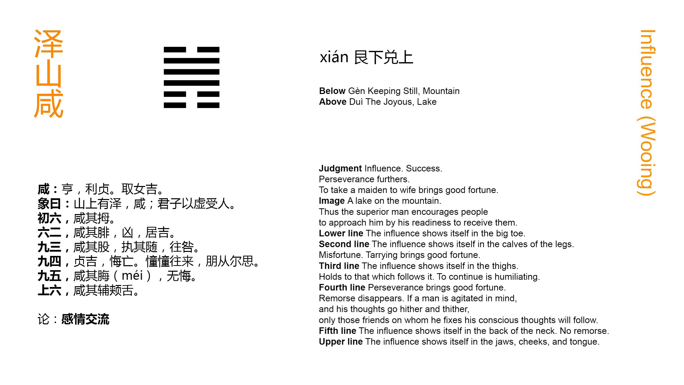

Chinese: 咸 ䷞ xián

Xián ䷞ indicates that, (on the fulfilment of the conditions implied in it), there will be free course and success. Its advantageousness will depend on the being firm and correct, (as) in marrying a young lady. There will be good fortune.
1. The first six, divided, shows one moving his great toes.
䷞ changing to ䷰
Matching Line 1 in Adjacent Hexagram: ䷟
2. The second SIX, divided, shows one moving the calves of his leg. There will be evil. If he abide (quiet in his place), there will be good fortune.
䷞ changing to ䷛
Matching Line 2 in Adjacent Hexagram: ䷟
3. The third NINE, undivided, shows one moving his thighs, and keeping close hold of those whom he follows. Going forward (in this way) will cause regret.
䷞ changing to ䷬
Matching Line 3 in Adjacent Hexagram: ䷟
4. The fourth NINE, undivided, shows that firm correctness which will lead to good fortune, and prevent all occasion for repentance. If its subject be unsettled in his movements, (only) his friends will follow his purpose.
䷞ changing to ䷦
Matching Line 4 in Adjacent Hexagram: ䷟
5. The fifth NINE, undivided, shows one moving the flesh along the spine above the heart. There will be no occasion for repentance.
䷞ changing to ䷽
Matching Line 5 in Adjacent Hexagram: ䷟
6. The sixth six, divided, shows one moving his jaws and tongue.
䷞ changing to ䷠
Matching Line 6 in Adjacent Hexagram: ䷟
With the 31st hexagram ䷞ commences the Second Section of the Text. It is difficult to say why any division of the hexagrams should be made here, for the student tries in vain to discover any continuity in the thoughts of the author that is now broken. The First Section does not contain a class of subjects different from those which we find in the Second. That the division was made, however, at a very early time, appears from the sixth Appendix on the Sequence of the Hexagrams, where the writer sets forth an analogy between the first and second figures, representing heaven and earth, as the originators of all things, and this figure and the next, representing (each of them) husband and wife, as the originators of all the social relations. This, however, is far from carrying conviction to my mind. The division of the Text of the Yì into two sections is a fact of which I am unable to give a satisfactory account.
Xián ䷞, as explained in the treatise on the Tuàn, has here the meaning of mutual influence, and the duke of Zhou, on the various lines, always uses Gǎn (感) for it in the sense of 'moving' or 'influencing to movement or action.' This is to my mind the subject of the hexagram considered as an essay, -- 'Influence; the different ways of bringing it to bear, and their issues.'
The Chinese character called xián is 咸, the graphic symbol for 'all, together, jointly.' Gǎn (感), the symbol for 'influencing,' has xián (咸) in it as its phonetic constituent (though the changes in pronunciation make it hard for an English reader to appreciate this), with the addition of xīn (心), the symbol for the heart.' Thus 感 (gǎn), 'to affect or influence,' = 咸 + 心 ; and it may have been that while the name or word was used with the significance of 'influencing,' the 心 was purposely dropt from it, to indicate the most important element in the thing, -- the absence of all purpose or motive. I venture to think that this would have been a device worthy of a diviner.
With regard to the idea of husband and wife being in the teaching of the hexagram, it is derived from the more recent symbolism of the eight trigrams ascribed to king Wén, and exhibited on table I and plate I. The more ancient usage of them is given in the paragraph on the Great Symbolism of Appendix II. The figure consists of Gèn ☶ 'the youngest son,' and over it Duì ☱, 'the youngest daughter.' These are in 'happy union.' p. 125 No influence, it is said, is so powerful and constant as that between husband and wife; and where these are young, it is especially active. Hence it is that Xián ䷞ is made up of Gèn ☶ and Duì ☱. All this is to me very doubtful. I can dimly apprehend why the whole line (⚊) was assumed as the symbol of strength and authority, and the broken line as that of weakness and submission. Beyond this I cannot follow Fú-xī in his formation of the trigrams; and still less can I assent to the more recent symbolism of them ascribed to king Wén.
Coming now to the figure, and its lines, the subject is that of mutual influence; and the author teaches that that influence, correct in itself, and for correct ends, is sure to be effective. He gives an instance, -- the case of a man marrying a young lady, the regulations for which have been laid down in China from the earliest times with great strictness and particularity. Such influence will be effective and fortunate.
Line 1 is weak, and at the bottom of the hexagram. Though 4 be a proper correlate, yet the influence indicated by it must be ineffective. However much a man's great toes may be moved, that will not enable him to walk.
The calves cannot move of themselves. They follow the moving of the feet. The moving of them indicates too much anxiety to move. Line 2, moreover, is weak. But it is also the central line, and if its subject abide quiet, till he is acted on from above, there will be good fortune.
Neither can the thighs move of themselves. The attempt to p. 126 move them is inauspicious. Its subject, however, the line being strong, and in an odd place, will wish to move, and follows the subject of 4, which is understood to be the seat of the mind. He exercises his influence therefore with a mind and purpose, which is not good.
Line 4 is strong, but in an even place. It is the seat of the mind. Its subject therefore is warned to be firm and correct in order to a good issue. If he be wavering and uncertain, his influence will not extend beyond the circle of his friends.
The symbolism of line 5 refers to a part of the body behind the heart, and is supposed therefore to indicate an influence, ineffective indeed, but free from selfish motive, and not needing to be repented of.
Line 6 is weak, and in an even place. It is the topmost line also of the trigram of satisfaction. Its influence by means of speech will only be that of loquacity and flattery, the evil of which needs not to be pointed out.
{kind=link}
{kind=link}